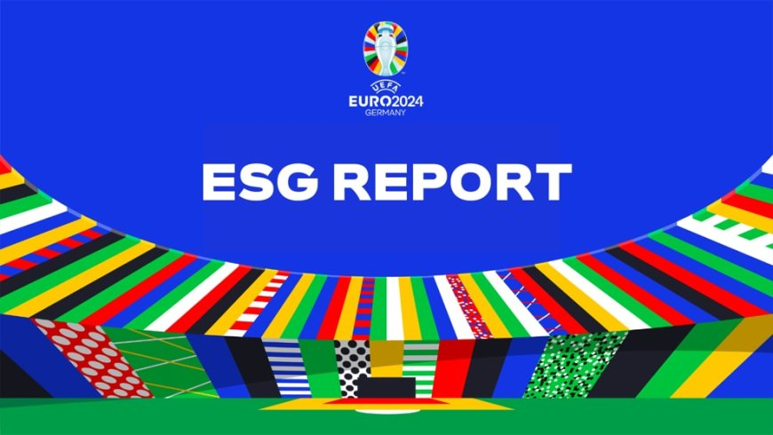

The UEFA EURO 2024 ESG report showcases the results of a €29.6m investment in sustainability and a data-driven approach.

UEFA EURO 2024 in Germany went beyond incredible gameplay and memorable on-field moments. It was a celebration of football's impact on society, setting new records and sparking change that extended far beyond the pitch.
Beyond the excitement of the matches and the vibrant atmosphere in the stadiums and fan zones, UEFA set out to redefine sustainable event hosting – a commitment reflected in the publication of the UEFA EURO 2024 Environmental, Social and Governance (ESG) report, launched in Frankfurt on 1 November at 11:00 CET.
With a mission grounded in ambition, action and accountability, the tournament aimed to leave a lasting legacy that extended far beyond football. A strategic investment of €29.6 million enabled UEFA to implement over 120 sustainability actions, achieving 95% of its pre-tournament targets.
Through targeted, data-driven initiatives, the tournament significantly reduced its environmental impact, aligned with the United Nations' Sustainable Development Goals, and demonstrated how football can lead by example.
A strategic investment of €29.6 million enabled UEFA to implement over 120 sustainability actions, achieving 95% of its pre-tournament targets.
"UEFA EURO 2024 was not just a sports event, it was a global movement. Over 2.67 million fans filled ten stadiums across Germany, while 5.4 billion viewers tuned in worldwide. But our ambition was more than numbers. This tournament's heartbeat was its drive for sustainability, inclusion, and integrity. Guided by three principles – ambition, action, and accountability – EURO 2024 proved how football can lead by example and we have opened a path toward a new, modern way of shaping a sport event."
Aleksander Čeferin, UEFA president
"We succeeded in making sustainability a key issue at EURO 2024, and we are proud of that. It is an achievement that many actors deserve credit for – the organisers from UEFA and EURO 2024 GmbH, the German government, and the host cities. But above all the fans, who contributed to this success in such large numbers not out of necessity, but out of conviction. For the DFB, this success is both a challenge and an obligation. We are going to continue pushing the issue of sustainability. It will naturally be an integral part of our bid to host the 2029 UEFA Women's European Championship."
Bernd Neuendorf, DFB president
One of the key successes of the tournament was reducing its carbon footprint. By providing safe, reliable and enjoyable public and active transport options, EURO 2024 encouraged fans to travel more sustainably. In addition, matches in the group stage were clustered into regional hubs, minimizing air travel by 75% compared to EURO 2016.
Air travel reduced by 75%
Matches in the group stage were clustered into regional hubs, minimizing air travel by 75% compared to EURO 2016.
Overall, these measures led to a 21% reduction in carbon emissions compared to initial forecasts. The tournament also embraced a circular economy model through its 4R principles – Reduce, Reuse, Recycle and Recover – resulting in a 36% reduction in waste compared to EURO 2016.
In addition, the establishment of a first-of-its-kind €7 million Climate Fund supported 272 sustainable infrastructure projects for amateur clubs and regional associations across Germany, leaving a lasting environmental legacy.
Nancy Faeser, Germany's Federal Minister of the Interior and Community, said: "Hosting UEFA EURO 2024 was a very special occasion for our country. Germany presented itself as a good host, and we had the chance to show what our country stands for: respect, diversity and democratic values. It was a peaceful and safe tournament. Those four weeks brought us closer as a society in the heart of Europe. Together we were able to achieve our goal of hosting an all-round sustainable tournament, setting standards for future major sporting events in Germany – in social, environmental and economic terms."
UEFA also prioritised social impact and respect for human rights. Enhanced stadium services allowed over 10,000 disabled fans to experience live matches more fully. Rapid response initiatives tackled abuse and discrimination in real time, both online and inside venues. Match observers attended all high-risk matches, while UEFA worked with Meta, X and TikTok to monitor social media accounts for abuse.
Overall, 46 targeted actions protected the rights, safety, and dignity of fans, players, and staff.
Affordability and inclusivity were also central to the tournament. UEFA made 387,000 tickets available for just €30, ensuring supporters from different backgrounds could attend. In addition, all 10 venues offered healthy food and beverage options to promote well-being among spectators.
Good governance was at the heart of EURO 2024, with a strong emphasis on education, transparency, and accountability. Through initiatives such as the #FootbALL and 4R campaigns, UEFA engaged 5.4 billion viewers worldwide, showing how sustainability and football can work together to create lasting positive change.
The same ESG framework is now being applied to the UEFA Women's EURO 2025 in Switzerland, as well as all UEFA competition finals.
The UEFA EURO 2024 Environmental, Social and Governance Report presents a model for how major sporting events can combine elite competition with sustainability, inclusion, and institutional accountability. With substantial investment, measurable targets, and broad stakeholder engagement, EURO 2024 set a new benchmark for socially and environmentally responsible football tournaments.